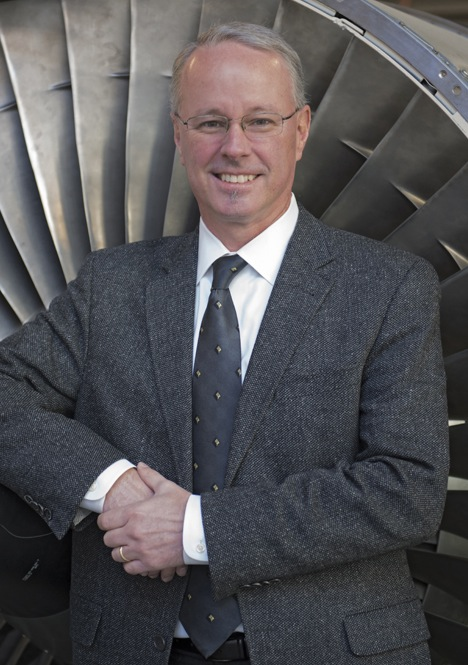
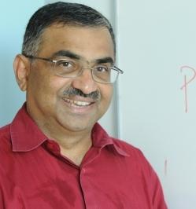

Past Conferences: 2014
28-29 April 2014
California Institute of Technology
Pasadena, California
The 2nd Interplanetary Small Satellite Conference conference took place at the
California Institute of
Technology on 28-29 April, 2014. As in years past, this conference was organized by
students, alumni, and staff from Caltech, MIT, Cornell, the University of Michigan, and JPL.
Presentations and Papers
Click
here for presentations and papers from the 2014 conference.
Keynote Speakers
We are grateful to our 2014 keynote speakers
Dr. Jakob van Zyl is the associate director of Project Formulation and Strategy at NASA's Jet Propulsion Laboratory. Formerly, he was the director for JPL's Astronomy and Physics Directorate. Van Zyl received an honors bachelor's degree cum laude in electronics engineering from the University of Stellenbosch, Stellenbosch, South Africa. He received both his master's and his doctorate in electrical engineering from Caltech. Van Zyl joined JPL in 1986 and held positions of increasing responsibility in the synthetic aperture radar program. In addition, he managed the Radar Science and Engineering Section, the Earth Science Flight Missions and Experiments Office, and the Focused Physical Oceanography and Solid Earth Program Office. He was appointed deputy director for the Astronomy and Physics Directorate in 2002. He has been an adjunct faculty member in the Mechanical and Aerospace Engineering Department, University of Southern California, where he taught the class "Remote Sensing Systems from Space" from 1997 to 2001. Since 2002, he has been teaching the class "Physics and Techniques of Remote Sensing" at Caltech.

Dr. David W. Miller began his term as the NASA chief technologist on March 17, 2014. He serves as the agency's principal advisor and advocate on NASA technology policy and programs. NASA's Office of the Chief Technologist coordinates, tracks and integrates technology investments across the agency and works to infuse innovative discoveries into future missions. The chief technologist leads NASA technology transfer and technology commercialization efforts, facilitating internal creativity and innovation, and works directly with other government agencies, the commercial aerospace community and academia. Miller serves as chief technologist through an intergovernmental personnel agreement with the Massachusetts Institute of Technology, where he is the Jerome C. Hunsaker Professor in the Department of Aeronautics and Astronautics and was the Director of the Space Systems Laboratory. Miller has a strong NASA connection, having worked with a broad range of NASA programs including the space shuttle, the International Space Station, the JWST Product Integrity Team, and the NASA CubeSat Launch Initiative. Most recently, he was the Principal Investigator for the Regolith X-ray Imaging Spectrometer for the OSIRIS-REx asteroid sample return mission, and a NASA Institute of Advanced Concepts fellow. He also recently served as the Vice Chair of the Air Force Scientific Advisory Board. He was the principal investigator for the Synchronized Position, Hold, Engage and Reorient Experimental Satellites, or SPHERES, project on the International Space Station. SPHERES are bowling-ball-sized free-flying satellites that have been tested for various capabilities on the ISS since 2006. Miller was also the co-principal investigator for the Middeck Active Control Experiment, which was flown on STS-67 and again on the International Space Station. At M.I.T. Miller's work focuses on developing reconfigurable spacecraft concepts that permit repair, inspection, assembly, upgrade, fractionation and multi-mission functionality through proximity operations and docking of modular satellites using universal, standardized interfaces. He has also helped develop a technique to control satellite formations, without the need for propellant, using high temperature super-conducting electromagnets. His other research includes vibration suppression and isolation, and thin face-sheet active and adaptive optics. Miller developed a unique, multi-semester, hands-on class at M.I.T. that immerses undergraduates in the end-to-end lifecycle process of developing and operating aerospace vehicles, some of which evolved into ISS laboratories. He has extended this educational model to the graduate level to provide Air Force officers with hands-on satellite development experience with five satellite systems currently under development. Miller earned his undergraduate and graduate degrees from MIT, and has been part of the faculty there since 1997.ote Sensing Systems from Space" from 1997 to 2001. Since 2002, he has been teaching the class "Physics and Techniques of Remote Sensing" at Caltech.
Dr. Ellen Stofan was appointed NASA chief scientist on August 25, 2013, serving as principal advisor to NASA Administrator Charles Bolden on the agency's science programs and science-related strategic planning and investments. Prior to her appointment, Stofan was vice president of Proxemy Research in Laytonsville, Md., and honorary professor in the department of Earth sciences at University College London in England. Her research has focused on the geology of Venus, Mars, Saturn's moon Titan, and Earth. Stofan is an associate member of the Cassini Mission to Saturn Radar Team and a co-investigator on the Mars Express Mission's MARSIS sounder. She also was principal investigator on the Titan Mare Explorer, a proposed mission to send a floating lander to a sea on Titan. Her appointment as chief scientist marks a return to NASA for Dr. Stofan. From 1991 through 2000, she held a number of senior scientist positions at NASA's Jet Propulsion Laboratory in Pasadena, Calif., including chief scientist for NASA's New Millennium Program, deputy project scientist for the Magellan Mission to Venus, and experiment scientist for SIR-C, an instrument that provided radar images of Earth on two shuttle flights in 1994. Stofan holds master and doctorate degrees in geological sciences from Brown University in Providence, R.I., and a bachelor's degree from the College of William and Mary in Williamsburg, Va. She has received many awards and honors, including the Presidential Early Career Award for Scientists and Engineers. Stofan has authored and published numerous professional papers, books and book chapters, and has chaired committees including the National Research Council Inner Planets Panel for the recent Planetary Science Decadal Survey and the Venus Exploration Analysis Group.

Professor S. R. Kulkarni is the McArthur Professor of Astronomy and Professor of Planetary Sciences at the California Institute of Technology. Since 2006 he has been the Director of the Caltech Optical Observatories (2006-present). He is also the Director of NASA Exoplanet Science Institute (NEXSCI). Kulkarni served as the Executive Officer for Astronomy from 1997-2000. In 2007 he was awarded an AD White Professor-at-Large at Cornell University, Ithaca, New York. Kulkarni obtained his undergradute degree from the Indian Institute of Technology, Delhi (1978) and his PhD from UC Berkeley (1983). He served a brief period as a postdoc at UC Berekely and Caltech before joining the faculty rank at Caltech in 1987. Prof. Kulkarni's primary interests are the study of cosmic explosions, compact objects (neutron stars and gamma-ray bursts), and the search for extra-solar planets through interferometeric and adaptive techniques. He is keenly interested in developing or refining astronomical methodologies. Kulkarni has been involved in a number of discoveries: the first millisecond pulsar, the first cluster pulsars, the first brown dwarf, clarifying the nature of soft gamma-ray repeaters, demonstrating the cosmological origin of gamma-ray bursts and more recently in elucidating super luminous supernovae (with the Palomar Transient Factory). His awards include the Alan T. Waterman Prize of the NSF, a fellowship from the David and Lucile Packard Foundation, a Presidential Young Investigator award from the NSF, the Helen B. Warner award of the American Astronomical Society and the Karl Janksy Prize of Associated Universities, Inc. Kulkarni was elected as Fellow of the American Academy of Arts and Sciences (1994), Fellow of the Royal Society of London (2001), Fellow of the National Academy of Sciences (2003) and Honorary Fellow, Indian Academy of Sciences (2011).